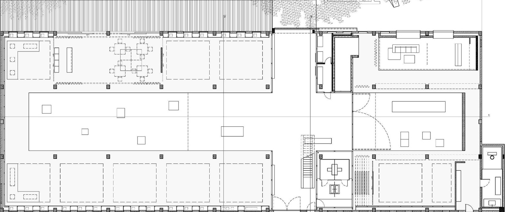

Introdução
O Problema da Galeria de Arte, que também é conhecido como Problema do Museu, é um problema clássico da área de geometria computacional, que tem a sua origem no seguinte problema do mundo real:
"Numa galeria de arte de forma poligonal, qual é o número mínimo de guardas que juntos podem observar toda a galeria de arte"?
Formalmente, considere uma área poligonal disposta como a planta de uma galeria de arte. Nesse caso, queremos minimizar o número de pontos (guardas) que são suficientes para cobrir toda a área da galeria de arte. Nesse sentido, os guardas não são móveis e têm um campo visual de 360 graus, de modo que vamos considerá-los como câmeras de vigilância.
Triangulação de Polígonos
Uma forma de obter um limite superior para esse problema é dividir o polígono em triângulos e então posicionar uma câmera em cada um deles. Triangular um polígono consiste em dividir o polígono em triângulos, por meio das diagonais, que é um segmento que conecta dois vértices de um polígono, estando estritamente dentro do polígono.
TEOREMA: Todo polígono simples com n vértices possui ao menos uma triangulação com exatamente n-2 triângulos.
O algoritmo que vamos utilizar para triangular um polígono simples recebido como entrada é o do ear-clipping, de complexidade O(n2). O algoritmo inicia verificando vértices que formam pontas de orelha: quando a sequência de pontos pi-1-pi-pi+1 do polígono faz um giro anti-horário e o triângulo formado não possui nenhum outro ponto dentro dele. Enquanto o número de vértices for maior que 3, remove a ponta de orelha encontrada (pi) e atualiza os status dos vértices adjacentes (o vértice pi-1 vira vizinho do pi+1).
Com isso, precisamos de no máximo n-2 câmeras para cobrir todo o polígono; basta fazer com que cada câmera cuide de um triângulo. Entretanto, é possível reduzir mais este valor, visto que triângulos diferentes podem compartilhar um mesmo vértice, o que tira a necessidade de cada um deles ter sua própria câmera. Assim, precisamos de um subconjunto de vértices capaz de cobrir todos os triângulos.
3-Coloração de Polígonos
Para executar a ideia apresentada no tópico anterior, podemos utilizar a coloração dos vértices do polígono ao nosso favor. A cor que for representada pela menor quantidade de vértices é o limite que desejamos. Embora o problema da coloração seja difícil de resolver, podemos sempre, em um polígono simples, realizar uma 3-coloração com complexidade computacional O(n).
Para tanto, construímos o grafo dual do grafo que representa o polígono, onde seus vértices representam os triângulos do polígono e as arestas representam triângulos adjacentes.
SERIA INTERESSANTE UM VÍDEO DAHORA QUE MOSTRA A CRIAÇÃO
Neste grafo dual, rodamos uma DFS (depth-first search). Para o primeiro vértice encontrado - o qual, relembrando, representa um triângulo no grafo original - pintamos o triângulo do grafo original com as três cores possíveis. Para os vértices subsequentes encontrados, utilizamos a terceira cor que não é usada na diagonal compartilhada com o triângulo anterior.
Ao terminarmos, teremos uma 3-coloração e dela escolhemos a partição com o menor número de vértices para posicionar as câmeras. Essa escolha nos retorna um conjunto com cerca de n/3 câmeras. Este conjunto encontrado não é o mínimo, mas é considerado um número razoável de câmeras.